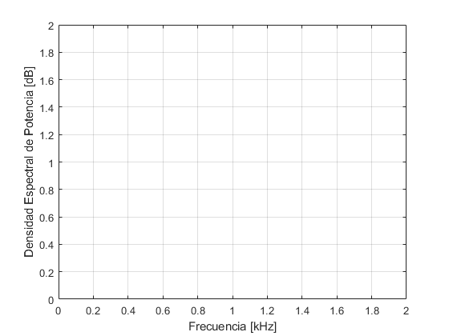
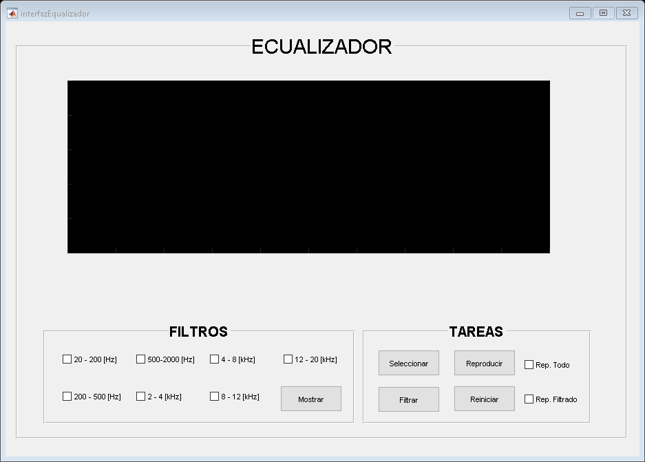

function varargout = interfazEqualizador(varargin)
gui_Singleton = 1;
gui_State = struct('gui_Name', mfilename, ...
'gui_Singleton', gui_Singleton, ...
'gui_OpeningFcn', @interfazEqualizador_OpeningFcn, ...
'gui_OutputFcn', @interfazEqualizador_OutputFcn, ...
'gui_LayoutFcn', [], ...
'gui_Callback', []);
if nargin && ischar(varargin{1})
gui_State.gui_Callback = str2func(varargin{1});
end
if nargout
[varargout{1:nargout}] = gui_mainfcn(gui_State, varargin{:});
else
gui_mainfcn(gui_State, varargin{:});
end
function interfazEqualizador_OpeningFcn(hObject, eventdata, handles, varargin)
handles.output = hObject;
clc
handles.Fs = 44100;
handles.signal = [];
handles.filter_signal = [];
handles.Pxx = [];
handles.Frecs = [];
handles.PxxH = [];
handles.H_frec = [];
handles.plt = plot(1,1,'Color',[240 255 0]/255);
line1 = line(1,1,'Color',[ 19 146 6]/255,'LineWidth',1.5);
line2 = line(1,1,'Color',[142 255 138]/255,'LineWidth',1.5);
line3 = line(1,1,'Color',[227 59 18]/255,'LineWidth',1.5);
line4 = line(1,1,'Color',[135 18 227]/255,'LineWidth',1.5);
line5 = line(1,1,'Color',[240 59 215]/255,'LineWidth',1.5);
line6 = line(1,1,'Color',[ 61 209 204]/255,'LineWidth',1.5);
line7 = line(1,1,'Color',[ 0 35 253]/255,'LineWidth',1.5);
handles.lines = [line1 line2 line3 line4 line5 line6 line7];
mostrar_etiquetas();
handles.audio = audioplayer(0, handles.Fs);
set(handles.grafica, 'GridColor', [1 1 1]);
set(handles.grafica, 'Color', [0 0 0]);
set(handles.checkButFil1 ,'Value',0);
set(handles.checkButFil2 ,'Value',0);
set(handles.checkButFil3 ,'Value',0);
set(handles.checkButFil4 ,'Value',0);
set(handles.checkButFil5 ,'Value',0);
set(handles.checkButFil6 ,'Value',0);
set(handles.checkButFil7 ,'Value',0);
set(handles.audioCompleto,'Value',0);
set(handles.audioFiltrado,'Value',0);
fil1 = load ('Filtros/F20_200_44100.mat');
fil2 = load ('Filtros/F200_500_44100.mat');
fil3 = load ('Filtros/F500_2000_44100.mat');
fil4 = load ('Filtros/F2000_4000_44100.mat');
fil5 = load ('Filtros/F4000_8000_44100.mat');
fil6 = load ('Filtros/F8000_12000_44100.mat');
fil7 = load ('Filtros/F12000_20000_44100.mat');
handles.filters = [fil1.Hd fil2.Hd fil3.Hd fil4.Hd ...
fil5.Hd fil6.Hd fil7.Hd ];
guidata(hObject, handles);
function varargout = interfazEqualizador_OutputFcn(hObject, eventdata, handles)
varargout{1} = handles.output;
function cargarArchivo_Callback(hObject, eventdata, handles)
clc
disp('Load data.')
[file,path] = uigetfile('*.wav');
if ~isequal(file,0)
disp(['User selected ', fullfile(path,file)]);
[y, Fs] = audioread(fullfile(path,file));
if Fs == handles.Fs
[~,cols] = size(y);
if cols > 1
y = sum(y,2)/cols;
end
[Pxx,F] = periodogram(y,rectwin(length(y)),...
2^nextpow2(length(y)),Fs);
handles.signal = y;
handles.Frecs = F;
handles.Pxx = Pxx;
mostrar_grafica(1, handles.plt, F, Pxx);
set(handles.grafica,'Xlim', [0 max(F/1e3)]);
set(handles.grafica,'Ylim', [min(handles.plt.YData) 100]);
handles.H_frec = Fs/2*linspace(0,1,1024);
handles.PxxH = freqz(handles.filters, length(handles.H_frec));
else
msgbox(['Frecuencia: ' num2str(Fs) '[Hz] invalida'],'Fs','error');
end
else
if isempty(handles.signal)
msgbox('Cargue un archivo .wav','Error','error');
end
end
guidata(hObject, handles);
function Filtrar_Callback(hObject, eventdata, handles)
for i = 1 : length(handles.lines)
handles.lines(i).XData = 1;
handles.lines(i).YData = 1;
end
if ~isempty(handles.signal)
vCheck = [get(handles.checkButFil1, 'Value') ...
get(handles.checkButFil2, 'Value') ...
get(handles.checkButFil3, 'Value') ...
get(handles.checkButFil4, 'Value') ...
get(handles.checkButFil5, 'Value') ...
get(handles.checkButFil6, 'Value') ...
get(handles.checkButFil7, 'Value') ...
];
cantFiltros = length(vCheck);
y = handles.signal * ones(1,cantFiltros);
clc;
for i = 1 : cantFiltros
if vCheck(i)
y(:,i) = filter(handles.filters(i),y(:,i));
disp(['Filtro ' num2str(i) ' Aplicado...'])
else
y(:,i) = 0;
end
end
y = sum(y,2)/sum(vCheck);
[Pxx,F] = periodogram(y,rectwin(length(y)),...
2^nextpow2(length(y)),handles.Fs);
mostrar_grafica(1, handles.plt, F, Pxx);
set(handles.grafica,'XLim', [0 max(F/1e3)]);
handles.filter_signal = y;
else
msgbox('Cargue un archivo .wav','Error','error')
end
guidata(hObject, handles);
function repAudio_Callback(hObject, eventdata, handles)
if ~isempty(handles.signal)
if get(handles.audioFiltrado, 'Value') && ~isempty(handles.filter_signal)
msgbox('Reproduciendo audio Filtrado.')
y = handles.filter_signal;
else
msgbox('Reproduciendo audio Original.')
y = handles.signal;
end
handles.audio = audioplayer(y, handles.Fs);
set(handles.audio,'TimerPeriod', 0.1);
set(handles.audio,'TimerFcn', @(~,~)espectroTiempoReal(y, ...
handles.Fs, handles.audio, handles.plt))
mostrar_etiquetas();
if get(handles.audioCompleto,'Value')
play(handles.audio);
else
play(handles.audio, [1 15*handles.Fs]);
end
else
msgbox('Cargue un archivo .wav o Filtre el audio.','Error','error');
end
guidata(hObject, handles);
function grafica_CreateFcn(hObject, eventdata, handles)
function reinicio_Callback(hObject, eventdata, handles)
handles.plt.XData = 1;
handles.plt.YData = 1;
for i = 1 : length(handles.lines)
handles.lines(i).XData = 1;
handles.lines(i).YData = 1;
end
handles.signal = [];
handles.filter_signal = [];
handles.Pxx = [];
handles.Frecs = [];
handles.PxxH = [];
handles.H_frec = [];
set(handles.checkButFil1 ,'Value',0);
set(handles.checkButFil2 ,'Value',0);
set(handles.checkButFil3 ,'Value',0);
set(handles.checkButFil4 ,'Value',0);
set(handles.checkButFil5 ,'Value',0);
set(handles.checkButFil6 ,'Value',0);
set(handles.checkButFil7 ,'Value',0);
set(handles.audioCompleto,'Value',0);
set(handles.audioFiltrado,'Value',0);
guidata(hObject, handles);
function mostrarFiltros_Callback(hObject, eventdata, handles)
handles.plt.XData = handles.Frecs/1e3;
handles.plt.YData = 10*log( abs(handles.Pxx) );
if ~isempty(handles.signal)
vCheck = [get(handles.checkButFil1, 'Value') ...
get(handles.checkButFil2, 'Value') ...
get(handles.checkButFil3, 'Value') ...
get(handles.checkButFil4, 'Value') ...
get(handles.checkButFil5, 'Value') ...
get(handles.checkButFil6, 'Value') ...
get(handles.checkButFil7, 'Value') ...
];
for i = 1 : length(vCheck)
if vCheck(i)
handles.lines(i).XData = handles.H_frec/1e3;
handles.lines(i).YData = 10*log( abs(handles.PxxH(:,i)) );
else
handles.lines(i).XData = 1;
handles.lines(i).YData = 1;
end
end
else
msgbox('Cargue un archivo .wav','Error','error');
end
 